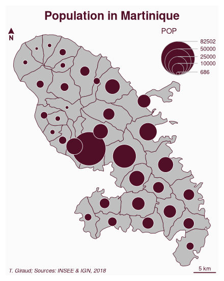
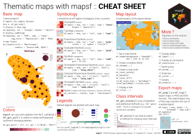

Create thematic maps and integrate them into your R workflow.
This package helps you design different cartographic representations such as proportional symbols, choropleths, or typology maps. It also provides several functions for displaying layout elements that enhance the graphical presentation of maps (e.g., scale bar, north arrow, title, labels). mapsf maps sf objects on base graphics.
Installation
You can install the released version of mapsf from CRAN with:
install.packages("mapsf")Alternatively, you can install the development version of mapsf (the dev branch) from r-universe with:
install.packages("mapsf", repos = c("https://riatelab.r-universe.dev", "https://cloud.r-project.org"))Usage
This is a basic example which shows how to create a map with mapsf.
library(mapsf)
# Import the sample dataset
mtq <- mf_get_mtq()
# Plot the base map
mf_map(x = mtq)
# Plot proportional symbols
mf_map(x = mtq, var = "POP", type = "prop", leg_pos = "topright")
# Plot a map layout
mf_layout(
title = "Population in Martinique",
credits = "T. Giraud; Sources: INSEE & IGN, 2018"
)
You can find more detailed examples on the “Get Started” section of the package website and you can also download its cheat sheet. 
Community Guidelines
One can contribute to the package through pull requests and report issues or ask questions here. See the CONTRIBUTING.md file for detailed instructions on how to contribute.
This project uses conventional commits and semantic versioning.